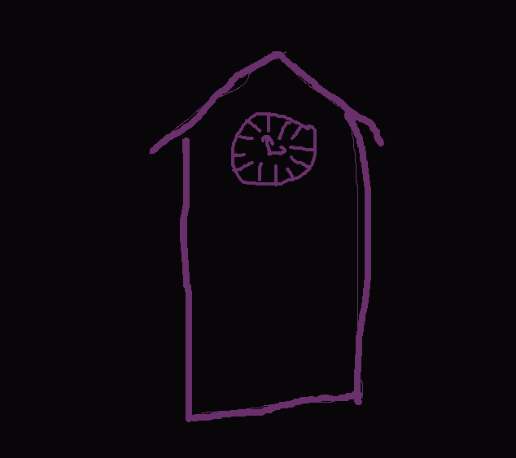
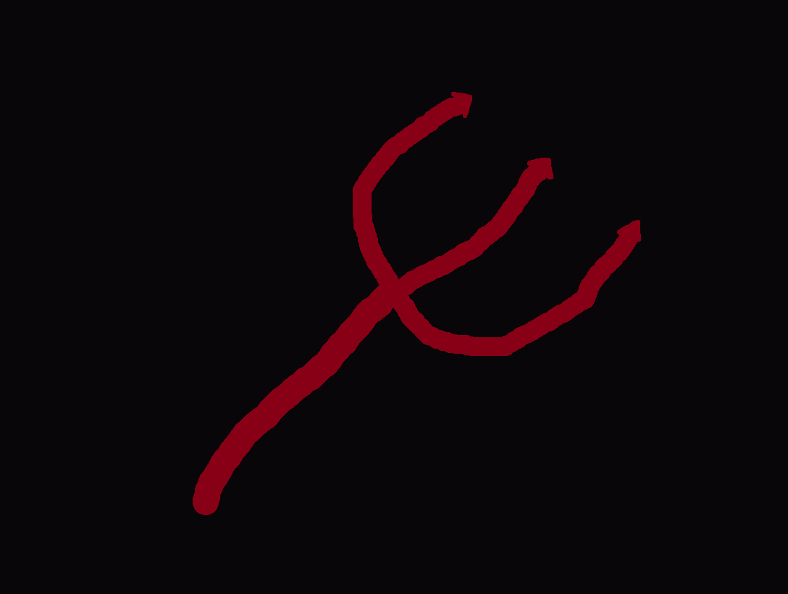
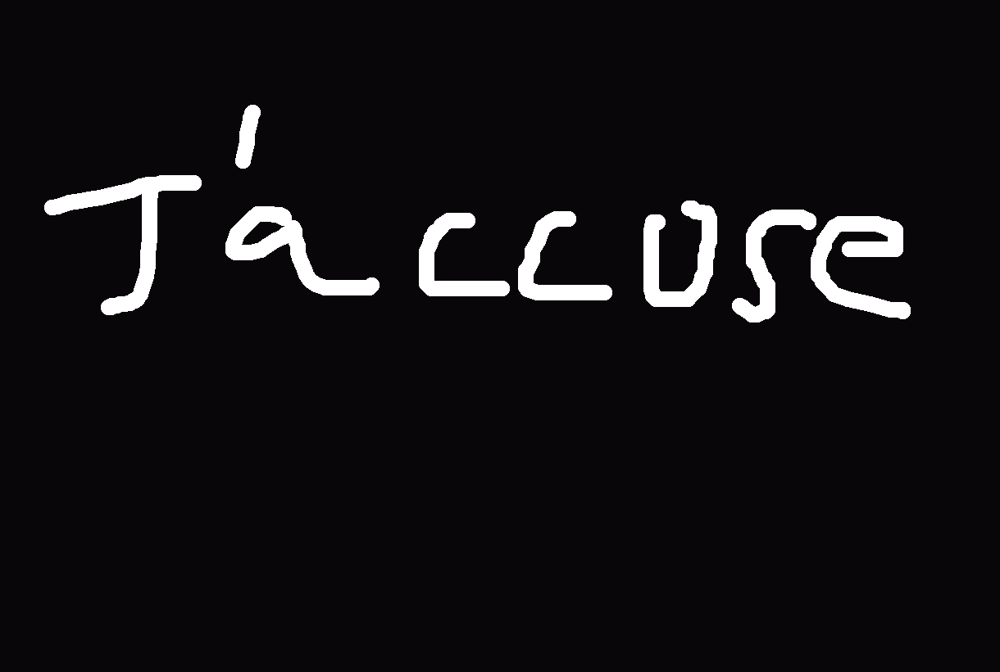

Blood on the Clocktower
Resources for players and hosts
Everything you need to feel prepared, comfortable, and ready to jump into the mystery.
Feedback
We love hearing what felt fun, confusing, exciting, or worth improving. If you have thoughts after a game, send them along so future sessions can be even better.
- Share notes on pacing, intrigue, or any moments that stood out.
- Tell us what made the night feel welcoming or memorable.
- For quick feedback, use the the Feedback form.
Scripts
At Sox we play a mixture of official BOTC scripts and custom scenarios, reading ahead can be a real benefit.
- Trouble Brewing: The default script that is great to start with!
- Bubble Truing: A custom script meant to introduce new mechanics and twists.
- Bad Moon Rising: More advanced; deaths can progress the story for experienced players.
BOTC Rules
Blood on the Clocktower is built around social deduction, bluffing, and collective storytelling. The core rhythm is simple:
- Each player has a secret role with hidden information and special abilities.
- Daytime is for discussion, accusations, and voting to eliminate suspects.
- Nighttime is when roles act, secrets deepen, and the story shifts.
- Good play means balancing truth, deception, and reading the room.
- for more information, visit the official BOTC website.
What to Bring
A little preparation helps the night run smoothly.
- Arrive a few minutes early so everyone can settle in.
- Bring a notebook or phone if you want to track clues and notes.
- Come ready to listen, participate, and enjoy the drama.
Community Etiquette
We want the experience to feel safe, fun, and respectful for everyone involved.
- Keep the atmosphere playful and supportive.
- Respect player boundaries and the pace of the game.
- Please abide by the Sox Code of Conduct.
How to Play
A quick walkthrough to get started with Blood on the Clocktower.

Watch How to Play on YouTube
Open the video on YouTube.